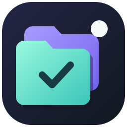

DEINE TABGRUPPE
Gruppe ohne Namen
Ein fester Platz für deine Tabs.
Dieser Start-Tab hält die Gruppe offen. Du kannst das in den Einstellungen ausschalten.

DEINE TABGRUPPE
Ein fester Platz für deine Tabs.
Dieser Start-Tab hält die Gruppe offen. Du kannst das in den Einstellungen ausschalten.